作図のセットアップダイアログを使用して作図する
Plotting-using-Plot-Setup
サマリー
このチュートリアルでは、グラフの作成、グラフの種類の変更、グラフへのプロットの追加/削除、プロットのグループ化/非グループ化、プロット範囲の変更など、さまざまな作図操作に役立つ、作図のセットアップダイアログの使用方法を説明します。
このチュートリアルでは、以下の項目について解説します:
- 作図のセットアップで折れ線グラフを作成する
- 作図のセットアップでプロットをグループ化/非グループ化する
- 作図のセットアップでプロットを追加/削除する
- 作図のセットアップでプロットタイプと表示範囲を変更する
- 作図のセットアップで表示順序を変更する
- 作図のセットアップで複数パネルグラフを作成する
作図のセットアップで折れ線グラフを作成する
- 空のワークシートを準備し、メニューから、データ：ファイルからインポート：単一ASCIIと選択するか、ブラウザ上部にある単一ASCIIインポートボタン
 をクリックします。
をクリックします。
- <Origin Installation Directory>\Samples\Curve Fitting\Step01.datファイルを選択し、オプションダイアログを表示にチェックし、開くボタンをクリックして、impASC ダイアログを開きます。
- OK ボタンをクリックし、データをワークシートにインポートします。
- ワークブックに戻り、どのデータも選択されていないことを確認します。
- 作図：基本の2Dグラフ：折れ線と操作すると、作図のセットアップダイアログが開きます。真ん中のパネルでは、デフォルトでロングネームが表示されていることが分かります。 列B（Sensor A x）をXとし、列C（Sensor A y）をYとします。追加ボタンをクリックして下のパネルに移動します。これは自動的にレイヤ1に追加されます。同じように、Sensor BとSensor Cでも操作します。
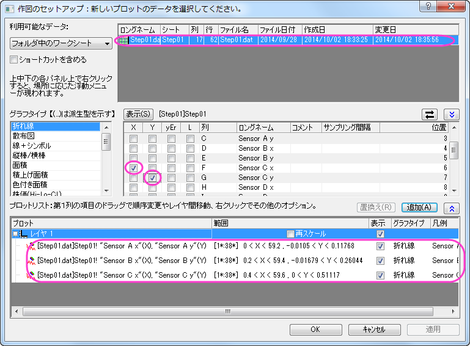
作図のセットアップでプロットをグループ化/非グループ化する
次に、これらのプロットをグループ化します。前のセクションで使用したグラフでそのまま操作します。
- Ctrlキーを押しながら下のパネルで3つのプロットを選択し、右クリックしてグループ化を選択します。これでこの3つのプロットはグループノードの下に入ります。
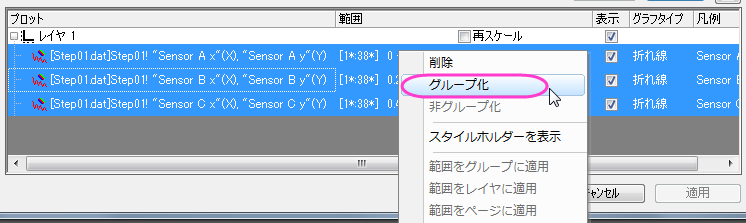
- OKをクリックして、ダイアログを閉じます。グラフは次のようになります。
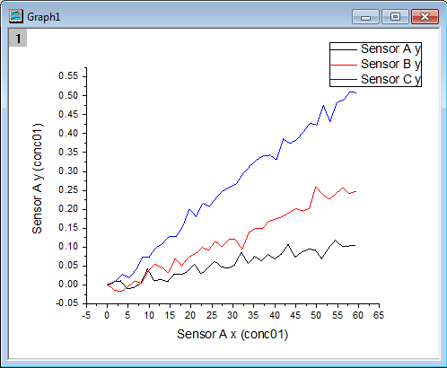
Note:
- プロットのグループ化の操作を行うと、作図の詳細ダイアログのグラフグループタブでこのグループの表示方法などを設定できます。
- グラフのグループ化を解くには作図のセットアップダイアログの下パネルを開き、グループノードを選択してから右クリックで非グループ化を選択します。
|
作図のセットアップでプロットを追加/削除する
これから作図したSensor Cのプロットを削除し、グラフにSensor Dのプロットを追加します。 前のセクションで使用したグラフでそのまま操作します。
- グラフをアクティブにし、グラフ操作：作図のセットアップを選択して作図のセットアップダイアログを開きます。 下のパネルでSensor Cのパネルを選択し、右クリックしてから削除を選択します。そして適用ボタン、OK ボタンをクリックして、ダイアログを閉じます。これで、Sensor C はグラフから削除されます。
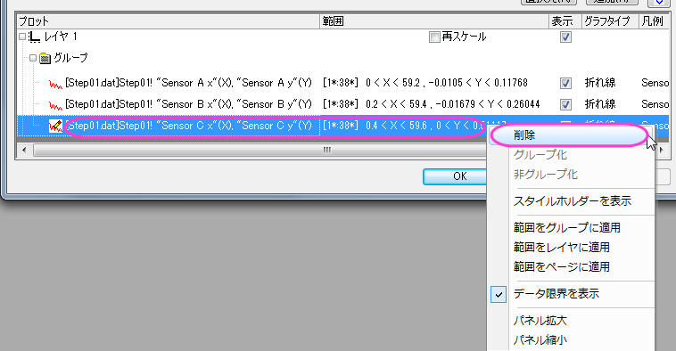
- Sensor Dのデータを追加するには、下のパネルでグループノードを選択してから真ん中のパネル(折りたたまれている場合は青い二重上向き矢印をクリックして表示)で列H（Sensor D x）をX、列I（Sensor D y）をYとして選択します。追加をクリックします。 そして 適用ボタン、OKボタンをクリックしてダイアログを閉じます。
- 次に、作図したグループ化プロットを編集します。プロットをダブルクリックして、作図の詳細ダイアログを開きます。プロットレベルでグラフの線タブを開き、太さを3に設定します。適用をクリックしてからOKをクリックしてダイアログを閉じます。グラフは次のようになります。
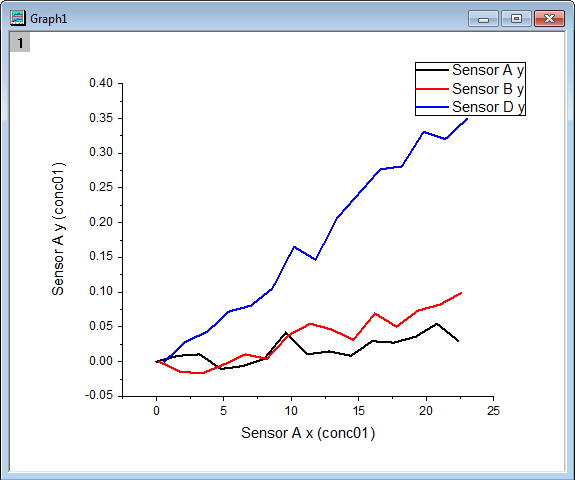
作図のセットアップで表示範囲を変更する
- 次に、データプロットの表示範囲を変更します。
- グラフをアクティブにし、グラフ操作：作図のセットアップを選択して作図のセットアップダイアログを開きます。一番下のパネルでSensor A を選択します。範囲列にあるセルをクリックするとセルの最後に小さなボタンが表示されます。
- このボタンをクリックします。範囲ダイアログが開きます。開始と終了の自動のチェックを外します。開始に1、終了に15を入力してOKボタンを押してダイアログを閉じます。
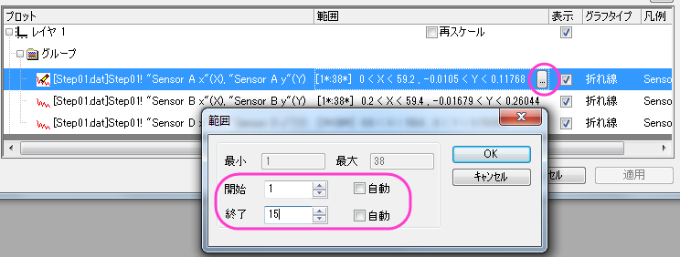
- この範囲を他のプロットにも適用するには下パネルで Sensor Aを右クリックして範囲をグループに適用を選択します。
- プロットを再スケールするには、レイヤ1の行にある再スケールにチェックを付けます。適用をクリックしてからOKをクリックしてダイアログを閉じます。
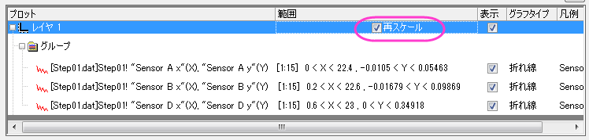
作図のセットアップで表示順序を変更する
これらの3つのグラフの表示順を変更します。前のセクションで使用したグラフでそのまま操作します。
- グラフをアクティブにし、グラフ操作：作図のセットアップを選択して作図のセットアップダイアログを開きます。
- 下のパネルでSensor Bをクリックしたままドラッグし、Sensor Aの上に移動します。
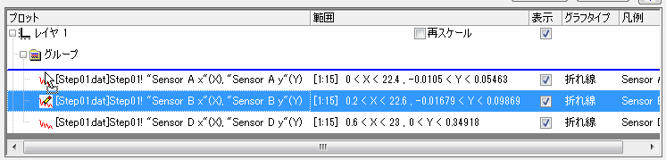
- 適用をクリックしてからOKをクリックしてダイアログを閉じます。グラフは次のように変化します。Sensor A のプロットがSensor Bの前面に来たことが確認できます。
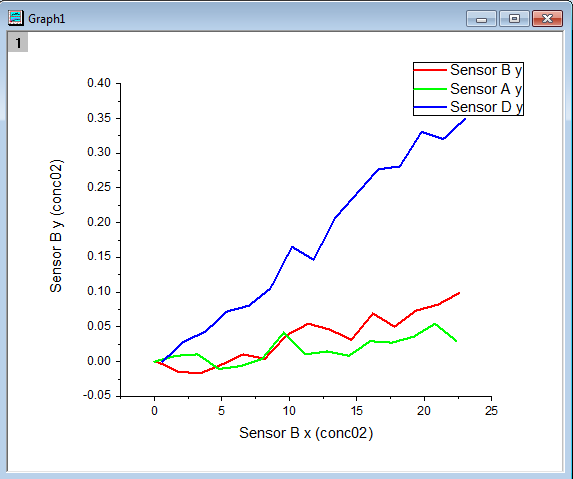
作図のセットアップでプロットタイプを変更する
次に、これらの折れ線グラフを散布図に変更し、作図範囲にあるデータを編集します。前のセクションで使用したグラフでそのまま操作します。
- グラフをアクティブにし、グラフウィンドウの左上にあるレイヤインデックスアイコン
 を右クリックし、グラフ操作：作図のセットアップを選択して作図のセットアップダイアログを開きます。
を右クリックし、グラフ操作：作図のセットアップを選択して作図のセットアップダイアログを開きます。
- 下のパネルでSensor B のプロットを選択し、プロットタイプパネルで散布図を選びます。置き換えボタンをクリックすると元の折れ線グラフを置き換えます。同じグループ内の他のプロットは自動的に散布図に切り替わります。OKをクリックしてダイアログを閉じます。
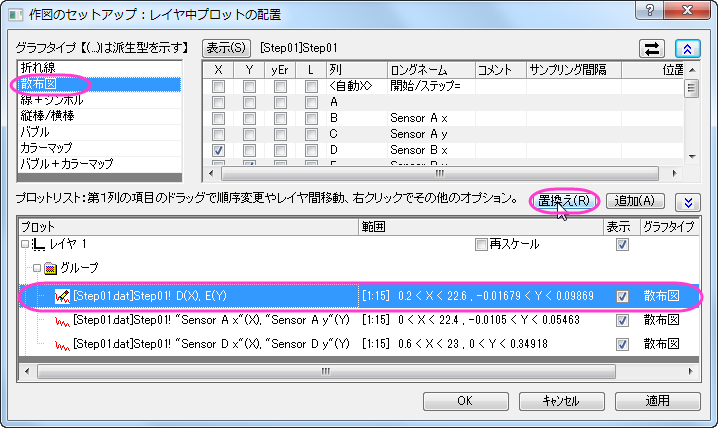
作図のセットアップで複数パネルグラフを作成する
作図のセットアップを使用すると、複数のレイヤを持つ複数パネルプロットは簡単に作図できます。
- 新しいプロジェクトを開始し、殻のワークシートを選択した状態で、メニューから、ファイル：インポート：複数ASCIIと選択するか、ブラウザ上部にある複数ASCIIインポートボタン
 をクリックします。
をクリックします。
- <Origin Installation Directory>\Samples\Curve Fitting\....にあるtep01.dat, Step02.dat , Step03.dat, Step04.dat をCtrlキーを押しながら選択します。ファイルの追加ボタンをクリックします。オプションダイアログを表示するにチェックを付けてOKを押すと、impASCダイアログが表示されます。
- インポートオプションの下のインポートモードでブックを新たに作って読み込むを選択します。他の設定はデフォルトのままでOKをクリックしてダイアログを閉じます。4つのワークブック、Step01.dat, Step02.dat, Step03.dat, Step04.dat が作成されます。
- ワークブックをアクティブにしないで作図：複数区分/軸：4区分と操作し、作図のセットアップダイアログを開きます。
- 利用可能なデータのドロップダウンリストからプロジェクト中のワークシートを選択します。(表示がない場合は青い上向きの二重矢印をクリックして、一番上のパネルを表示します。)左側のパネルに、4つのワークブックが表示されます。
- Ctrlキーを使用して上のパネルに表示されている4つのワークブックを全て選択し、真ん中のパネルで列B（Sensor A x）をX,列C（Sensor A y）をYに設定します。
- グラフタイプで折れ線を選択し、下のパネルでレイヤ1を選択します。追加をクリックします。これらのワークブックの中にあったSensor A のデータはレイヤ1に追加されました。
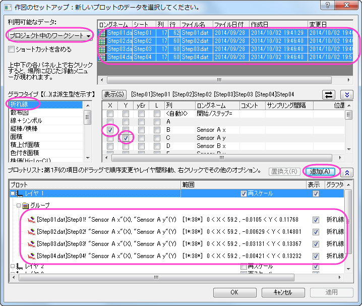
- この手順をSensor B, Sensor C, Sensor D で繰り返し、それぞれレイヤ2、レイヤ3、レイヤ4に追加します。OKをクリックしてダイアログを閉じます。グラフは次のようになります。
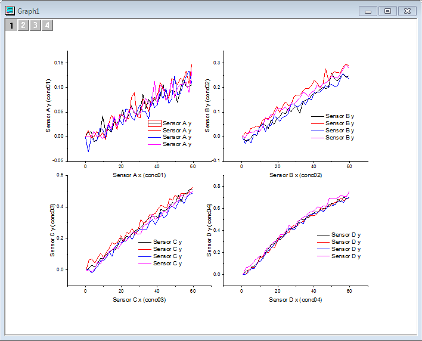